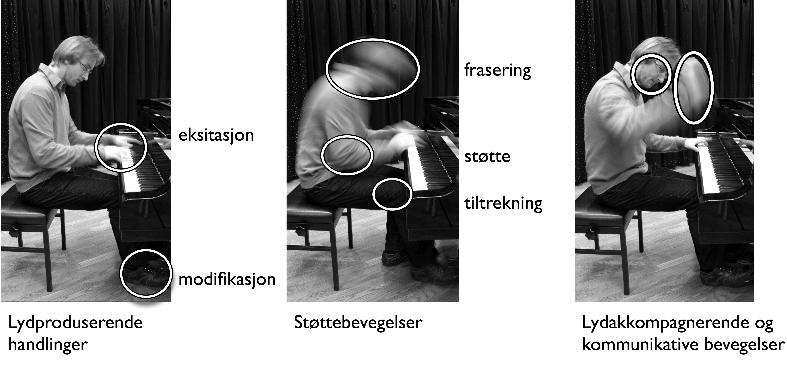
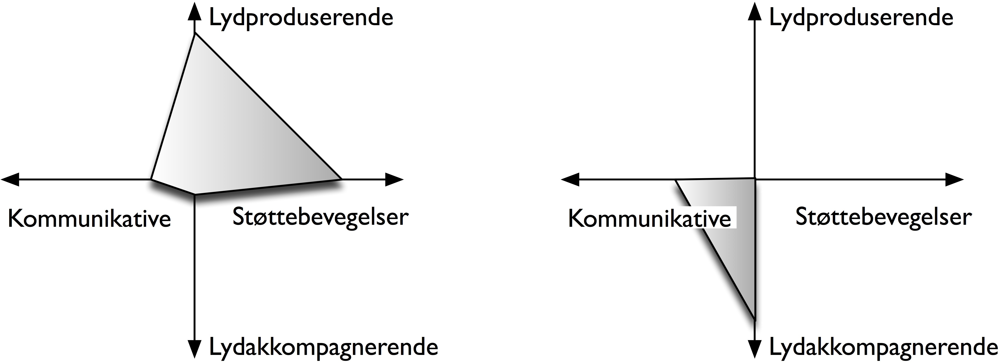

5. Bevegelser hos utøvere¶
I dette kapitlet skal vi se på forskjellige typer musikkrelaterte kroppsbevegelser hos utøvere, og vi skal beskrive funksjonen de forskjellige handlingene og bevegelsene har i det musikalske forløpet.
Musikkrelaterte bevegelser¶
Vi kan grovt sett dele inn i tre grupper som utfører musikkrelaterte bevegelser: musikere, dirigenter og dansere. Her skal vi begynne med å se på bevegelsene hos musikere, med fokus på de funksjonelle kategoriene lydproduserende handlinger, støttebevegelser, lydakkompagnerende bevegelser og kommunikative bevegelser.
Bevegelsene til dirigenter kan ses på som lydkoordinerende, ettersom de ikke direkte leder til lydproduksjon; de er derimot viktige for organiseringen og koordineringen av lydproduserende bevegelser hos musikerne. Vi skal ikke se på dirigentbevegelser i denne boken, men interesserte lesere kan finne mye litteratur i for eksempel Nakra (2000), Kolesnik og Wanderley (2004) og Gambetta (2005). Den teatralske funksjonen til dirigenters bevegelser er beskrevet av blant annet Small (1998).
Bevegelsene til dansere er gjerne lydakkompagnerende ettersom de følger etter eller kontrasterer med den musikalske lyden. Selv om det kan være mange likheter, er det viktig å skille mellom dansebevegelser som utføres av utøvere og av publikum. En danseutøver har som mål å kommunisere med publikum gjennom sine bevegelser. Publikums dansebevegelser, for eksempel på en konsert eller et utested, er et resultat av en interaksjon med musikken som utøves av andre. Målet med publikums dansebevegelser er individuell tilfredsstillelse og kommunikasjon med personene i umiddelbar nærhet. Ulike typer dansebevegelser blir omtalt i kapittel 6.
For å forstå mer av de funksjonelle sidene av musikkrelaterte bevegelser kan vi ta utgangspunkt i fire kategorier, en kombinasjon av kategoriene presentert av Sylvie Gibet (1987), Claude Cadoz (1988), François Delalande (1988) og Marcelo M. Wanderley (2004):
Lydproduserende handlinger er de handlingene som produserer lyd. Disse kan igjen deles inn i to kategorier: eksitasjon og modifikasjon.
Støttebevegelser hjelper de lydproduserende handlingene på forskjellige måter. Disse bevegelsene kan videre deles inn i hjelpebevegelser, fraseringsbevegelser og tiltrekningsbevegelser.
Lydakkompagnerende bevegelser er ikke involvert i lydproduksjon, men følger derimot kvaliteter i lyden. Disse kan være lydskisserende, ved at de følger etter konturer i lydobjekter, eller de kan mime lydproduserende handlinger.
Kommunikative bevegelser er beregnet på mellommenneskelig kommunikasjon og kan være interne for en utøver, eller ses i relasjonene utøver–utøver eller utøver–sanser.
Figur 39 viser forskjellige typer musikkrelaterte bevegelser i pianospilling. De forskjellige kategoriene utelukker ikke hverandre; mange bevegelser kan ha flere funksjoner på samme tid. Når en pianist slår an den siste tonen i et stykke etterfulgt av et teatralsk løft, vil handlingen ha elementer av lydproduserende, støttende, akkompagnerende og kommunikative bevegelser på samme tid. Et slikt funksjonelt mangfold er illustrert i et dimensjonsrom i figur 40. Dimensjonsrom brukes ofte for å analysere interaktive systemer (Graham et al. 2000) og har blitt brukt for å analysere funksjonalitet i digitale musikkinstrumenter (Birnbaum et al. 2005). Her brukes et dimensjonsrom for å visualisere hvordan bevegelsene til en musiker og en danser dekker forskjellige musikkrelaterte bevegelsesfunksjoner.


Lydproduserende handlinger¶
Den franske musikkteknologiforskeren Claude Cadoz (1988) foreslo en oppdeling av lydproduserende handlinger i to hovedkategorier: eksitasjon og modifikasjon. Vi skal her se nærmere på disse to typene av lydproduserende handlinger.
I kapittel 2 ble det vist tre hovedtyper eksitasjonshandlinger: impulsive, utholdte og iterative handlinger. Hver av disse hovedtypene kan synliggjøres ved hjelp av sine energiprofiler (se figur 3). Eksitasjonshandlinger kan videre sies å være enten direkte eller indirekte avhengig av om det er et objekt mellom det lydproduserende elementet av instrumentet og objektet som utfører eksitasjonen. Ved fingerspill på en gitar, bruker man direkte eksitasjonshandlinger, mens når man spiller med plekter, er det en indirekte eksitasjonshandling. Andre typer indirekte eksitasjonshandlinger er bruken av bue på strengeinstrumenter eller bruken av stikker og køller på perkusjonsinstrumenter. I mer sammensatte instrumenter, som et piano, er det en lang mekanisk kjede mellom fingerens anslag på tangenten til hammeren som slår mot strengen.
Modifikasjonshandlinger er den andre underkategorien av lydproduserende handlinger. Det er handlinger som ikke produserer lyd i seg selv, men som modifiserer lyden i instrumentet. Når man spiller gitar, utfører den høyre hånden lydproduserende handlinger ved å slå an strengen, mens den venstre hånden utfører lydmodifiserende handlinger ved å velge hvilke bånd strengen skal klinge fra. Cadoz (1988) foreslår to underkategorier av lydmodifiserende handlinger:
Parametriske: Handlinger som forandrer en parameter kontinuerlig, for eksempel buetrykk i fiolinspilling.
Strukturelle: Handlinger som modifiserer eller forandrer strukturen til et objekt, for eksempel åpen eller lukket klaff på et blåseinstrument.
De fleste musikkinstrumenter spilles med både eksitasjons- og modifikasjonshandlinger. I noen instrumenter er de to handlingstypene tydelig separert, som i strykeinstrumenter der de to hendene spiller helt forskjellige roller: Venstrehånden styrer hovedsakelig tonehøyde, mens høyrehånden fører buen som eksiterer strengen og styrer dynamikk og klang. Blåseinstrumenter har også en arbeidsfordeling mellom forskjellige kroppsdeler: Eksitasjonen skjer hovedsakelig fra munn og lepper, mens modifikasjonshandlinger utføres av fingrene.
I mange tilfeller kan det være en kobling mellom eksitasjons- og modifikasjonshandlinger. I blåseinstrumenter utfører munnen eksitasjonshandlinger, men kan også modifisere klangfargen. Tilsvarende kan man på strengeinstrumenter bruke venstrehånden for å utføre eksitasjonshandlinger med fingrene rett på strengene, mens høyrehånden kan være modifiserende ved for eksempel å dempe strengene.
På noen instrumenter er det ikke så lett å skille mellom eksitasjons- og modifikasjonshandlinger, det gjelder særlig for perkusive instrumenter. En pianist har liten kontroll over lyden etter at en tangent er slått an. Det samme gjelder for de fleste slagverksinstrumentene, der anslaget styrer både eksitasjon og modifikasjon av lyden.
Som disse eksemplene viser, er det ikke lett å finne et system for å klassifisere de forskjellige typene lydproduserende handlinger. Det er heller ikke et mål i seg selv; noe av gleden ved å spille på et instrument er nettopp de uendelige kombinasjonsmulighetene som finnes. Kategoriene som er nevnt over, er snarere ment for å forstå mer av funksjonene de musikkrelaterte handlingene spiller i en musikalsk sammenheng.
Støttebevegelser¶
De lydproduserende handlingene som ble beskrevet i forrige avsnitt, er nødvendige for å skape lyd, men dette ville ikke vært mulig uten forskjellige typer av støttebevegelser. Støttebevegelsene er ikke direkte involvert i lydproduksjonen, men er allikevel viktige for det klingende resultatet. Når man spiller piano, er det fingrene som utfører de lydproduserende handlingene (indirekte), men bevegelsen starter i overkroppen og videreføres gjennom armen til hånden og til fingrene. Vi kan her skille mellom tre forskjellige hovedtyper av støttebevegelser:
hjelpebevegelser
fraseringsbevegelser
tiltrekningsbevegelser
Disse kalles bevegelser istedenfor handlinger, siden de ikke er målrettede på samme måte som de lydproduserende handlingene.
Hjelpebevegelser er de bevegelsene som er en direkte støtte til selve lydproduksjonen. I pianospilling inkluderer dette arm-, albue- og håndleddsbevegelser som gjør at fingrene treffer de ønskede tangentene. En fingerbevegelse er resultatet av at et komplekst, flerleddet system (armen) klarer å finne riktig bane og hastighet for at fingeren skal treffe riktig tangent til riktig tid. Prefiks og suffiks av disse bevegelsene er koordinert slik at man er klar til å bevege seg videre til neste tangent. De som har spilt piano, husker nok pianolærerens oppfordring om å huske å legge tommelen godt under hånden når man spiller oppadgående skalaer, slik at man tidlig forbereder seg på det kommende anslaget.
Fraseringsbevegelser er støttebevegelser som ikke er direkte koblet til lydproduksjonen, men i større grad knyttet til det musikalske innholdet. Marcelo M. Wanderley (2002) har gjennom flere år studert bevegelsene til klarinettister og funnet at fraseringsbevegelser er en integrert del av musikerens utøvelse. Dette har han kunnet dokumentere ved å bruke både optiske og elektromagnetiske bevegelsessporingssystemer som registrerer hvordan forskjellige punkter på kroppen beveger seg over tid. Ved å sammenligne flere opptak av klarinettister som spiller det samme stykket, har han funnet at musikerne gjør de samme fraseringsbevegelsene på de samme stedene i musikken. Dette er også tilfellet når musikeren blir bedt om å spille mer eller mindre ”ekspressivt”. Selv når en musiker blir bedt om å stå helt stille under utøvelsen, kan man se at de samme bevegelsesmønstrene gjentar seg.
Wanderley og hans kolleger har også funnet at slike fraseringsbevegelser er stabile over tid. I en studie der flere klarinettister ble bedt om å komme tilbake og spille et stykke senere, fant man like bevegelsesmønstre på samme sted i det musikalske forløpet (Wanderley et al. 2005). Dette viser at bevegelsene til musikerne er reproduserbare, noe som støtter opp under ideen om at musikkutøvelsen begynner som bevegelse.
Selv om fraseringsbevegelser ikke er direkte lydproduserende, har Wanderley (1999) vist at slike bevegelser påvirker den produserte lyden hos klarinettister. Normalt er klarinetten rettet mot bakken, og lyden man hører, er et resultat av en serie refleksjoner og lydabsorpsjon i gulv, stoler, notestativ, andre musikere osv. Når derimot klarinetten rettes mer direkte mot den som lytter, vil lyden ha en skarpere klang. På denne måten kan man si at det som begynner som en fraseringsbevegelse, en oppadgående bevegelse av klarinetten for å tydeliggjøre fraser i musikken, ender som en lydmodifiserende handling når klangfargen endrer seg.
En tredje type støttebevegelser er det som i den engelskspråklige litteraturen ofte kalles entrained movements, og som vi på norsk kan kalle tiltrekningsbevegelser. Ideen om at to eller flere fysiske systemer kan ha en tiltrekningskraft på hverandre og lede til synkronisering, har blitt studert innenfor en rekke fagområder, inkludert fysikk, biologi, fysiologi og kulturstudier (Strogatz og Stewart 1993; Glass 2001). Det er også flere musikkforskere som har begynt å interessere seg for hvordan tiltrekningsbevegelser kan ha en funksjon i oppbygningen av musikalske strukturer og rytmer. I musikalsk sammenheng kan tiltrekningsbevegelser finnes på flere forskjellige nivåer: internt hos en musiker, i relasjonen mellom musiker og instrument, eller mellom musikere. Et eksempel på en tiltrekningsbevegelse er det å trampe takten med foten eller bevege på kneet mens man spiller. Det kan være vanskelig å si om en slik bevegelse kommer som et resultat av den rytmiske figuren man spiller, eller om rytmen i den musikalske lyden kommer som et resultat av bevegelsen. Ofte vil lyd og bevegelse påvirke hverandre gjensidig, og det vil ikke være mulig å si hva som kom først.
I studier av indisk folkemusikk har forskningsgruppen til den britiske musikkforskeren Martin Clayton sett på hvordan lyd og bevegelse gjensidig påvirker hverandre. Konklusjonen fra disse studiene er at tiltrekningsbevegelser er viktige for hver enkelt musiker, men også for å hjelpe flere musikere til å spille sammen (Clayton et al. 2005). I tillegg har Clayton og hans kolleger sett at publikum også utfører tiltrekningsbevegelser som støtter opp under utøvelsen.
Tiltrekningsbevegelser er viktige i forskjellige typer dansemusikk og ”groove-basert” musikk. Her er det et poeng at kroppen rives med, og at man kan ”kjenne” grooven i kroppen. Den norske musikkforskeren Hans T. Zeiner-Henriksen (2009) argumenterer for at det nettopp er en slik synkronisering på et underliggende nivå som skaper følelsen av groove i musikk. Tiltrekningsbevegelser kan dermed ses på som en generator for rytme og timing i musikk, på samme måte som rytme og timing i musikk kan generere bevegelser (Clarke 1999).
Selv om tiltrekningsbevegelser kanskje er mest synlige i forskjellige former for rytmisk musikk, kan det argumenteres for at denne typen bevegelser finnes i alle typer musikk. Selv under konserter med vestlig kunstmusikk, som ofte er preget av en stram bevegelsesregi, kan man finne tiltrekningsbevegelser hos både musikere og publikum. Det er ikke uvanlig å se orkestermusikere som tramper takten med foten mens de spiller. Tilsvarende kan vuggende bevegelser i overkroppen hos musikerne også ses som et eksempel på tiltrekningsbevegelser, som hjelper til å synkronisere utøvelsen.
På samme måte som for de lydproduserende bevegelsestypene, er det ofte vanskelig å skille mellom de forskjellige typene av støttebevegelser. Alle disse bevegelsene overlapper og danner et komplekst bevegelsesmønster som også påvirker lyden, selv om de kanskje ikke var ment som lydproduserende til å begynne med. De ulike støttebevegelsene er en integrert del av bevegelsesmønsteret til en musiker, og de er på ingen måte tilfeldige. Snarere burde det legges større vekt på denne typen bevegelser i musikkopplæring. Mange musikklærere har nok en tendens til å be elevene om å fokusere på de lydproduserende bevegelsene, og har i liten grad oppmuntret til, eller kanskje til og med begrenset, utviklingen av støttebevegelsene. Med tanke på musiseringen, inkludert frasering og musikalsk hukommelse, ville det heller vært en idé å fokusere mer på hvordan man kan lære seg å forbedre slike støttebevegelser.
Andre typer bevegelser¶
Lydakkompagnerende bevegelser er den tredje type musikkrelaterte bevegelser som ble nevnt i innledningen til dette kapitlet. Dette kan være bevegelser der man følger konturene til en melodi med hånden i luften eller mimer en lydproduserende handling (såkalt luftinstrumentspilling). Vi skal se nærmere på slike bevegelser i kapittel 6.
Alle bevegelser kan tolkes som en form for kommunikasjon, men det kan allikevel være praktisk å skille ut en egen kategori med kommunikative bevegelser. Dette er bevegelser som kan være kommunikative i lingvistisk forstand, slik som gestene omtalt i kapittel 2. Et eksempel er en sanger som utfører håndgester som passer med teksten som synges. På samme måte som i tale kan slike kommunikative bevegelser være tett koblet til lyden, og brukes til å støtte opp under det meningsbærende innholdet i lyd og tekst.
Kommunikative bevegelser kan også være helt fristilt fra lyden, og brukes da aktivt i kommunikasjon mellom utøver og publikum. Mange musikere bruker slike bevegelser som et effektivt virkemiddel for å skape spenning før de begynner å spille. Forflytning på scenen og gestikulering til publikum er andre eksempler på kommunikative bevegelser som er vanlige i en konsertsammenheng. Særlig i populærmusikken bruker artistene mye tid på å rendyrke forskjellige kommunikative bevegelser som brukes i konserter eller i musikkvideoer. I mange tilfeller koreograferes disse bevegelsene, noe som gjør at de nærmer seg dansebevegelser.
I dette kapitlet er det omtalt en rekke forskjellige typer musikkrelaterte bevegelser. Selv om vi her har sett på hvordan de kan deles opp i forskjellige funksjonelle kategorier, er det også viktig å se på hvordan de forskjellige bevegelsene fungerer sammen. Alle mennesker har et eget og unikt bevegelsesmønster, og musikere utvikler et eget bevegelsesrepertoar som de kan gjenkjennes på. Ofte kan et slikt bevegelsesrepertoar være konsistent over tid. Mange musikere har egne særtrekk, som for eksempel hvordan Jimmy Hendrix svinger armen over hodet når han når klimaks i sine gitarsoloer. Det er ikke lett å si om denne armbevegelsen er en lydakkompagnerende bevegelse som følger etter lyden i gitaren, eller om det er en støttebevegelse som hjelper til med å skape den utholdte lyden. Eller kanskje det rett og slett begynte som en teatralsk bevegelse som etter hvert har blitt internalisert? Sannsynligvis har den komponenter av alle disse funksjonene. En slik armbevegelse kan også ses hos en rekke andre rockegitarister. Det kan derfor se ut som forskjellige bevegelsessekvenser inngår i repertoaret til enhver rockegitarist, på samme måte som forskjellige riff har blitt ”standardisert”. Dette er et eksempel på hvordan yngre musikere tar etter og imiterer mer anerkjente musikere og deres spillestil.
Det har i liten grad blitt forsket systematisk på bevegelsesrepertoar og overføring av bevegelsesmønstre mellom musikere, og her er det er mye å hente. Kanskje vil man kunne finne at bevegelsesmønstrene hos en artist formes relativt tidlig i karrieren og utvikles gradvis på linje med den generelle musikalske utviklingen. Tilsvarende vil man kunne se en overføring av bevegelsesmønstre fra eldre til yngre artister på samme måte som andre musikalske ferdigheter overføres.
Sammendrag¶
I dette kapitlet er det beskrevet forskjellige typer funksjonelle bevegelser hos musikere. De lydproduserende handlingene kan deles opp i eksitasjonshandlinger som skaper lyd, og modifikasjonshandlinger som forandrer lyden. Støttebevegelser kan deles opp i hjelpebevegelser som støtter opp under de lydproduserende handlingene. Andre typer støttebevegelser er fraseringsbevegelser som er med på å forme den musikalske fraseringen, samt tiltrekningsbevegelser som er viktige i forhold til rytmisk frasering. Lydakkompagnerende bevegelser følger etter kvaliteter i lyden, og vil bli tatt opp i neste kapittel. Kommunikative bevegelser kan sammenlignes med gester i tale, og kan være helt frikoblet fra lyd. I de fleste praktiske eksempler vil en bevegelse være sammensatt og inneholde komponenter fra flere eller alle de forskjellige bevegelsestypene. Målet med en funksjonell klassifikasjon er dermed ikke å finne ut nøyaktig hvilke typer de representerer, men heller forsøke å se på hvilken funksjon bevegelsene kan spille i vår opplevelse av musikken som fremføres.
Les mer¶
Oversikt over musikkrelaterte bevegelser: Cadoz og Wanderley (2000)
Oversikt over musikkinstrumenter og spillestil: Kvifte (1989)
Analyse av musikkrelaterte bevegelser: Gritten og King (2006)